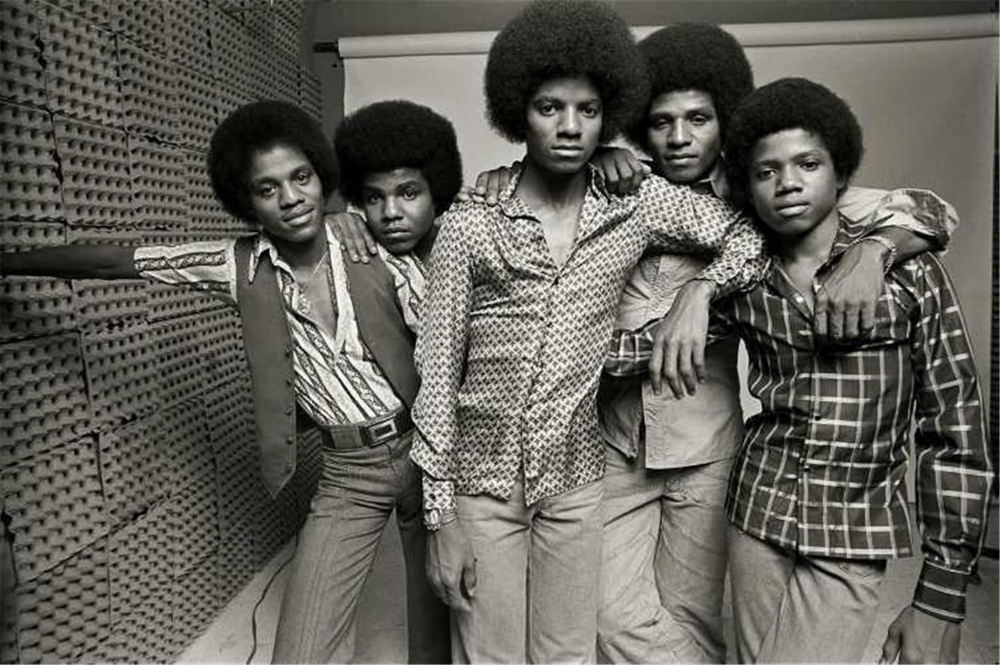
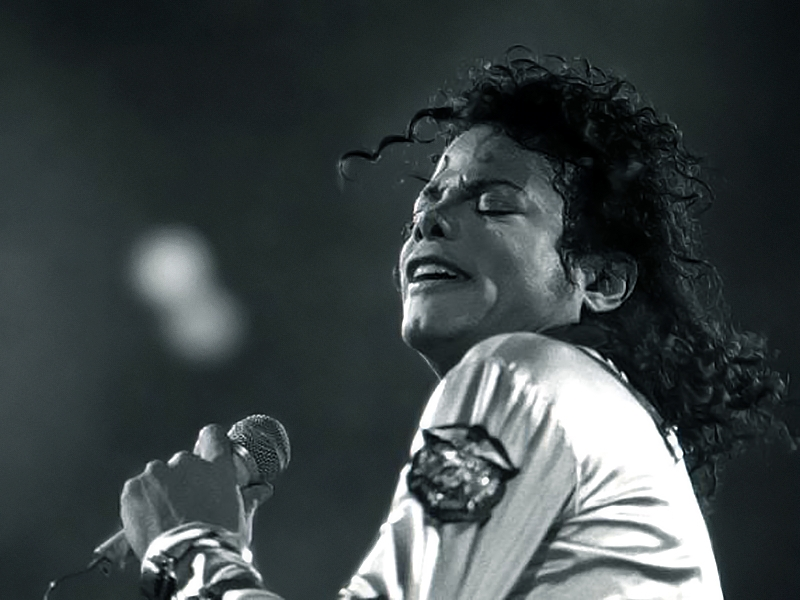
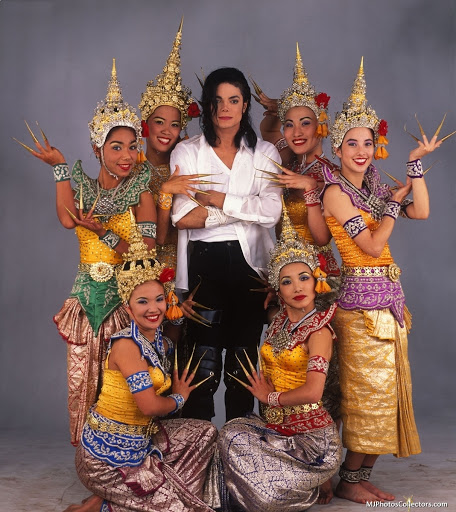
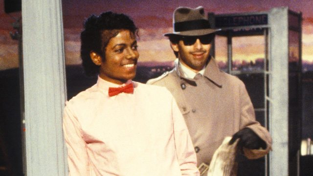

Michael Joseph Jackson was an American singer, songwriter, and dancer. Dubbed the "King of Pop", he is regarded as one of the most significant cultural figures of the 20th century. Through stage and video performances, he popularized complicated dance techniques such as the moonwalk, to which he gave the name.
His sound and style have influenced artists of various genres, and his contributions to music, dance, and fashion, along with his publicized personal life, made him a global figure in popular culture for over four decades. Jackson is the most awarded artist in the history of popular music, and also making me a big admirer of his music too. A very controversial and sensational artist, his creative work is a mix of different music, highlighting social issues and cultures of the world through the videos, and the iconic dance moves.
Beginnings of a Star
Michael Joseph Jackson was born in Gary, Indiana, near Chicago, on August 29, 1958.He was the eighth of ten children in the Jackson family, a working-class African-American family living in a two-bedroom house on Jackson Street.His mother, Katherine Esther Jackson (née Scruse), played clarinet and piano, had aspired to be a country-and-western performer, and worked part-time at Sears.
In 1964, Michael and Marlon joined the Jackson Brothers—a band formed by their father which included Jackie, Tito, and Jermaine—as backup musicians playing congas and tambourine.Later that year, Michael began sharing lead vocals with Jermaine, and the group's name was changed to the Jackson 5. 'This band of brothers', Jackson Five became a big hit, with Michael as the center of attention owing to his lead vocals.
In January 1970, "I Want You Back" became the first Jackson 5 song to reach number one the US Billboard Hot 100; it stayed there for four weeks. Three more singles with Motown—"ABC", "The Love You Save", and "I'll Be There"—also topped the chart.In May 1971, the Jackson family moved into a large house on a two-acre estate in Encino, California.During this period, Michael developed from a child performer into a teen idol.As he emerged as a solo performer in the early 1970s, he maintained ties to the Jackson 5. Between 1972 and 1975, Michael released four solo studio albums with Motown: Got to Be There (1972), Ben (1972), Music & Me (1973), and Forever, Michael (1975)."Got to Be There" and "Ben", the title tracks from his first two solo albums, sold well as singles, as did a cover of Bobby Day's "Rockin' Robin".

Jackson's fifth solo album, Off the Wall (1979), was when he was established him as a solo performer and that also helped him move from the bubblegum pop of his youth to more complex sounds.It produced four top 10 entries in the US: "Off the Wall", "She's Out of My Life", and the chart-topping singles "Don't Stop 'Til You Get Enough" and "Rock with You". The album reached number three on the US Billboard 200 and sold over 20 million copies worldwide.In 1980, Jackson won three American Music Awards for his solo work: Favorite Soul/R&B Album, Favorite Soul/R&B Male Artist, and Favorite Soul/R&B Single for "Don't Stop 'Til You Get Enough".
Musical Style
Jackson sang from childhood, and over time his voice and vocal style changed. Between 1971 and 1975, his voice descended from boy soprano to high tenor. He was known for his vocal range. The most interesting thing about this artist, is the fact that Jackson had no formal music training and could not read or write music notation. He is credited for playing guitar, keyboard and drums, but was not proficient in them. When composing, he recorded ideas by beatboxing and imitating instruments vocally. Describing the process, he said: "I'll just sing the bass part into the tape recorder. I'll take that bass lick and put the chords of the melody over the bass lick and that's what inspires the melody." Engineer Robert Hoffman recalled Jackson dictating a guitar chord note by note and singing string arrangements part by part into a cassette recorder.


Through a wide variety of songs, his music videos were filled with creative visuals, famous celebrity cameos and also common people from different backgrounds around the world. The famous song 'Black or White' proved to be a strong message for equality between people. The lyrics of the song, 'It don't matter if you're black or white' was a very powerful line!
His music proved to provide a platform for other black, African-American artists to showcase their music.

A still from the music video of 'Billie Jean'.
Popular Hits
Some of his most famous hits, that I can listen to anyday are listed below.
Billie Jean
'Billie Jean' features a 24 year old Michael, as a star, walking around the neighbourhood, being followed by a paparazzi, highlighting how his life is in the spotlight, he sings about how this girl, 'Billie Jean' says Michael is the father of her child to which he says 'Billie Jean is not my lover'.
The song is catchy, with really good beats, good music, with the iconic 'eeehhh' and 'oooooh' that Michael used to sing in his songs.
"Billie Jean" blends post-disco, rhythm and blues, funk and dance-pop. The lyrics describe a woman, Billie Jean, who claims that the narrator is the father of her newborn son, which he denies. Jackson said the lyrics were based on groupies' claims about his older brothers when he toured with them as the Jackson 5.
You Rock My World
This 2001 hit, features Chris tucker, Marlon Brando as cameos in the video, with Michael Jackson. The video involves Michael trying to pursue a girl he sees in a bar, owned by gangsters. In his pursual, a fight breaks out and the bar burns down eventually. The song is so good because of the music, the lyrics and the break dance Michael does.
Thriller
Another very popular song, this song became a hit owing to its intensely occult video, featuring a michael, on a date with a girl, when suddenly the dead come alive, the pair try running from the dead but end up trapped, where its revealed that Michael himself is one of the dead.
The song too has a really good beat, with amazing lyrics too and is a must-hear.
My admiration for Michael Jackson's music comes from my father. I distinctly remember when I was younger, about 8 or 9 years old, when my father got a CD with 'Michael Jacksons greatest hits'. We have those two CDs to this day with us, even though there isn't a CD player in our home anymore, but those CDs are a prized possession. That's when I developed a liking to MJ's songs. Me and my dad still jam to these songs, enjoy the uncoventional dances he does in his videos, and the music too.
An artist, who created a new and creative style for himself, in terms of music, dance, videography, musical style, and inspiring so many artists we see today, whose music is still so ever-present even today, this webpage is like a tribute to the 'King of Pop'.
Some other songs of Michael Jackson one would definetly get hooked onto.